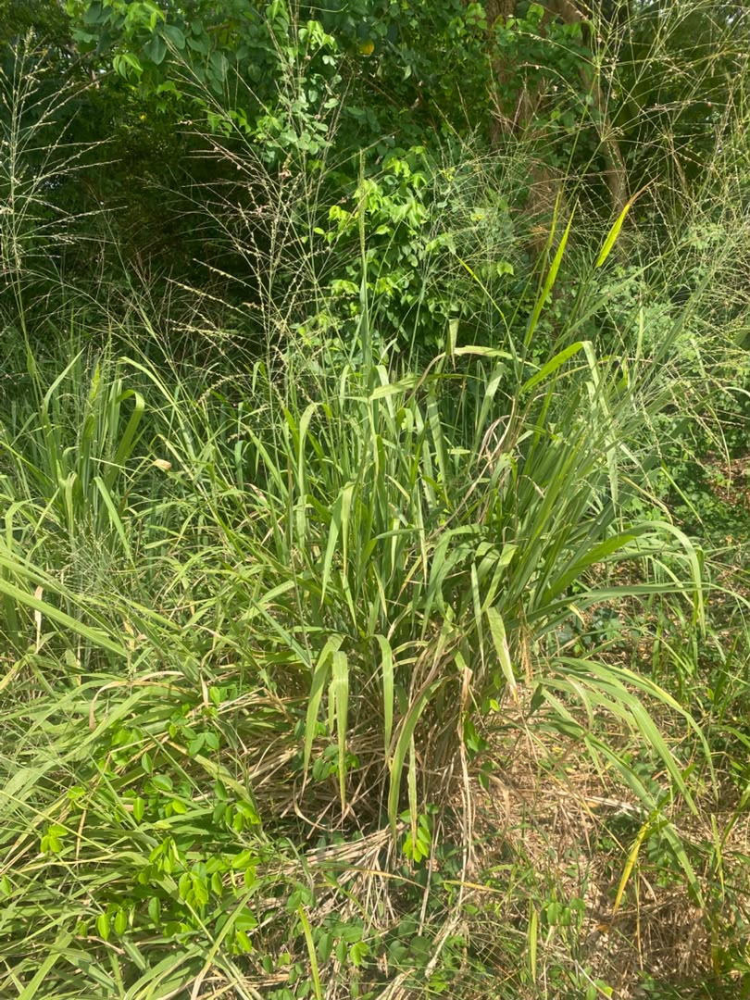

Appareil végétatif
Des prairies à perte de vue
Les tiges creuses et les feuilles étroites caractérisent de nombreuses graminées. Leurs racines denses aident à stabiliser le sol. Le grain des céréales est un fruit sec, appelé caryopse.
Le défi relevé
Faire voyager le pollen
Le vent emporte le pollen des étamines vers les stigmates plumeux. Les fleurs n'ont souvent pas besoin d'attirer des pollinisateurs animaux.
étamines
→
vent
→
stigmate
